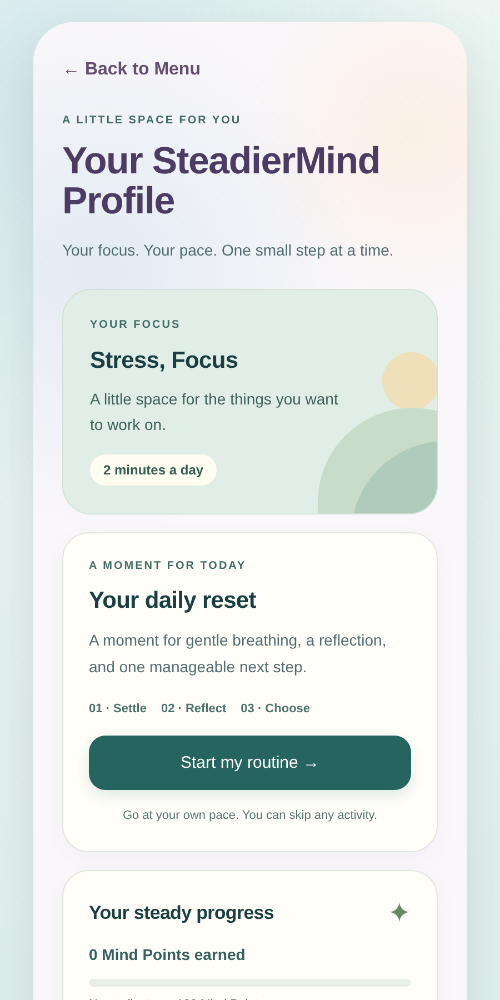

Make a little room.
Try gentle breathing or notice what’s around you. Every practice is optional.
A moment for you
A short pause. A few words. One manageable next step. Make room for yourself with gentle tools that fit your day.
You don’t have to make every feeling disappear
to take a little time for yourself.

A real look inside SteadierMind · example preferences
Small steps. Your pace.
No perfect routine required. Choose a little support, and leave room for what works for you.
Try gentle breathing or notice what’s around you. Every practice is optional.
Check in with yourself or write a short reflection. A few words are enough.
Choose something manageable to carry into your day. You don’t have to do it all.
A little look inside
Three short demos, using the real app. Captioned and made to watch with sound off.
01 · Between tasks
Notice a nearby detail with the grounding tool. Skip or stop whenever you choose.
Try grounding Download clip02 · When thoughts pile up
Name a worry, consider what’s possible, and choose a small response. Example writing is for demonstration.
Explore Worry Release Download clip03 · A moment for yourself
Choose a short routine with space to settle, reflect, and pick a next step. Any activity can be skipped.
Find your starting point Download clipThese are edited walkthroughs, not real-time sessions. No personal user entries appear. Download captions and suggested post copy.
More than one way to make space
Start with what feels useful today. Come back to something different tomorrow.
Explore the free appChoose a 2-, 5-, or 10-minute starting routine, and go at your own pace.
15 illustrated lessons about anxiety, thoughts, confidence, sleep, and balance.
Notice patterns and give your thoughts a place to land.
Explore focus and memory games, activity progress, and participation rewards.
Your space stays yours
Your journal and mood entries stay in this browser on this device. They don’t sync across devices, so keep a backup of anything you want to retain. Optional reminder delivery uses a separate service.
Read how your data is handledA few things to know
The current browser app is free to use. No account or payment details are needed to try the tools.
No. You can skip activities, finish early, or choose a single tool. Routines offer a starting point; you choose your pace.
Yes. Open SteadierMind in your phone’s browser. You can also add it to your Home Screen. Your saved entries remain in the browser and on the device where you created them.
No. SteadierMind provides general wellness education and self-guided tools. It does not diagnose conditions, provide treatment, or replace professional care. Seek appropriate medical advice for new or concerning symptoms.
SteadierMind is intended for ages 13 and older. Users under 18 should have parent or guardian permission. Review the terms before beginning.
Whenever you’re ready
Make a little space for yourself today.
Try a short routineFree to try · No account needed